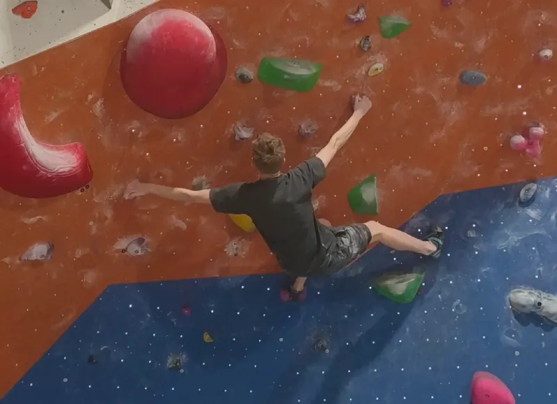
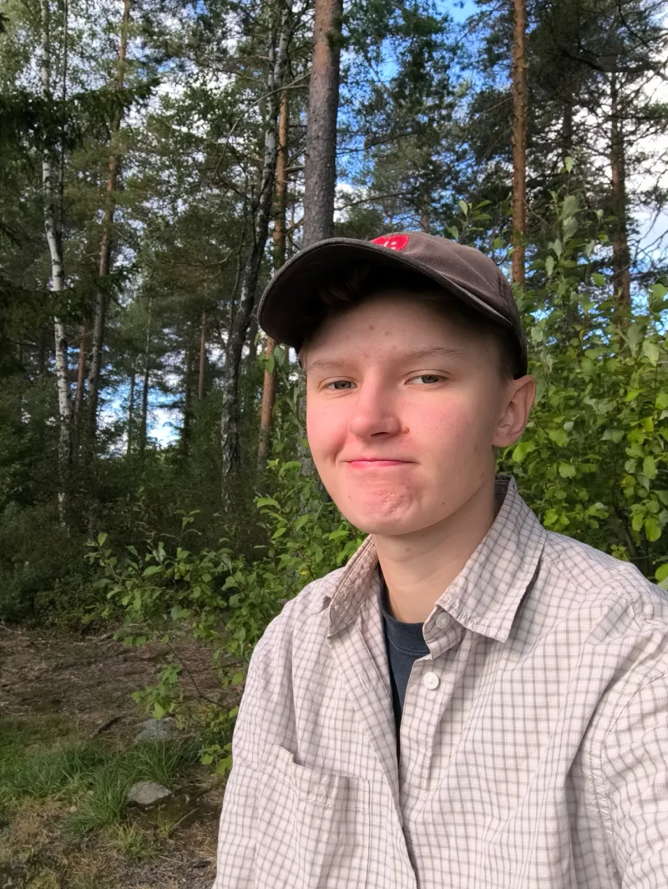

Vem är jag?
Jag heter Isac Larsson, är 22 år och bor i Falun. På fritiden gillar jag att spela datorspel (mest Overwatch, men också Minecraft och Sims 4 ibland). Utöver det tycker jag mycket om att klättra. Jag håller mest på med det som kallas för bouldering, där man klättrar på lägre höjd utan rep och sele. Läs mer om det på sidan hobby.
På gymnasiet gick jag teknikprogrammet med it-inriktning så jag har en del erfarenhet av programmering och webbutveckling sedan tidigare. Jag tycker webbutveckling är fantastiskt roligt och jag ser verkligen fram emot att lära mig mer!

